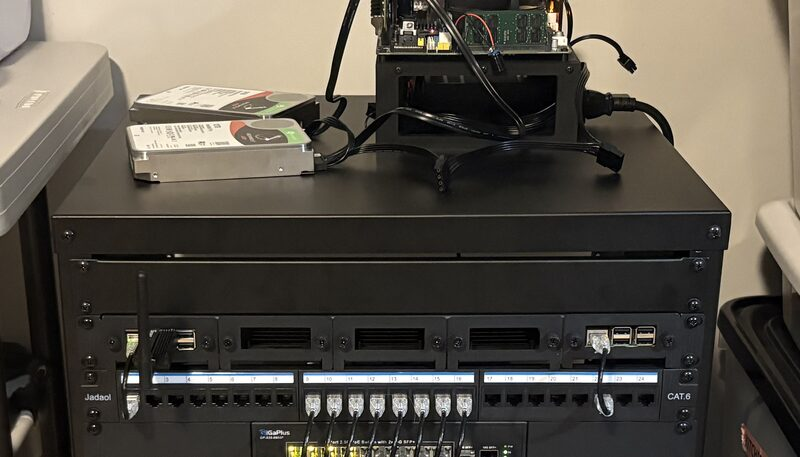
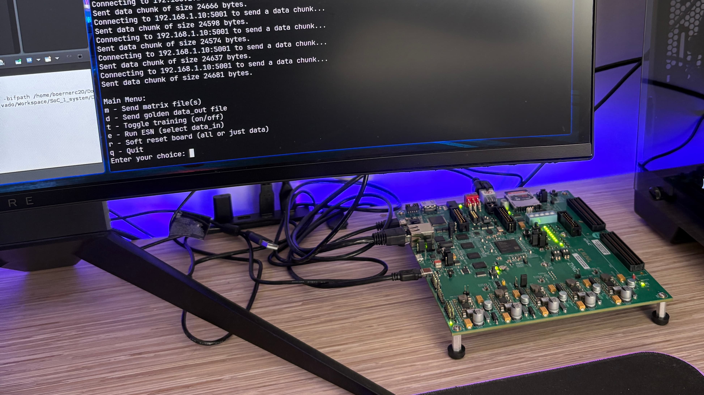
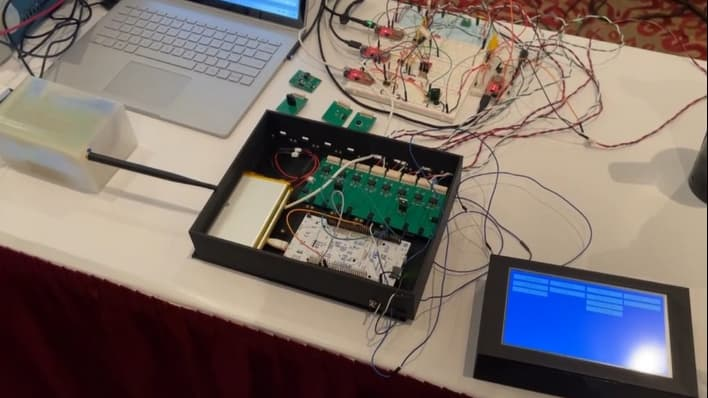
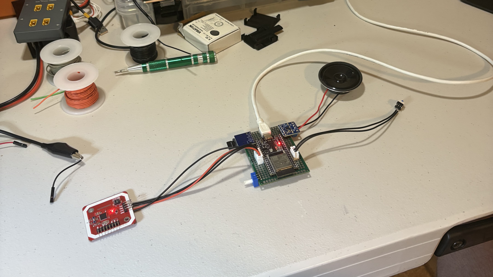
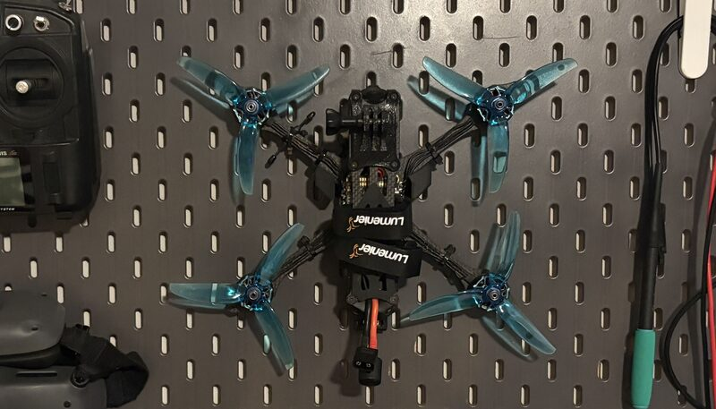
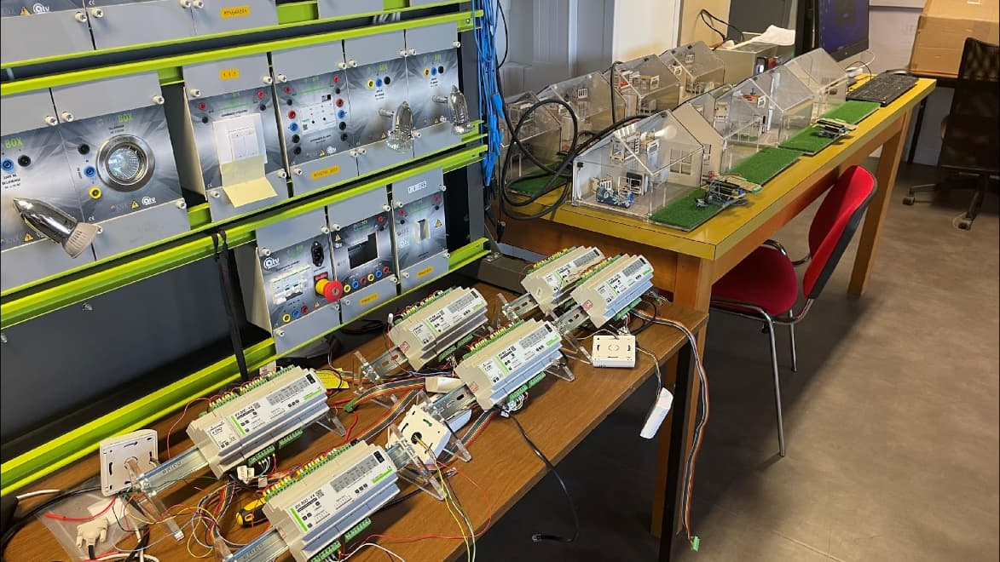
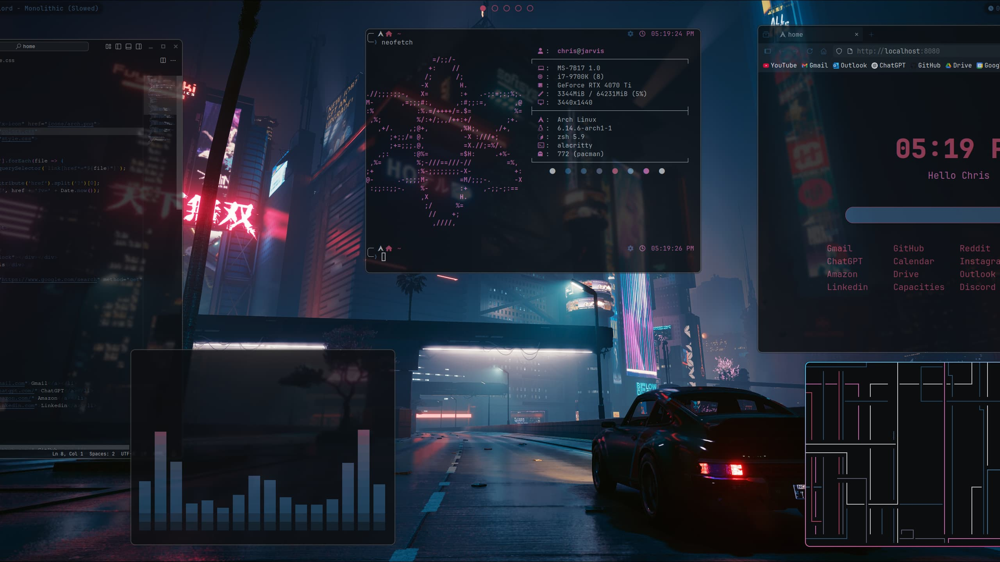

25 year old computer engineering Master's grad working as an electrical engineer — embedded systems, circuit design, and electronics.
{ get to know me better }
I'm a Computer Engineering Master's graduate from Virginia Tech, now working as an Electrical Engineer at Northrop Grumman, where I support the Command & Data Handling (C&DH) subsystem on the ESPAStar satellite platform. My background spans embedded systems, circuit design, hardware bring-up and validation, sensor integration, and low-level firmware — from RISC-V computer-architecture research to smart-home energy systems in France. I hold an active DoD Top Secret clearance. Outside of work I stay hands-on: designing boards in KiCad, running a distributed homelab, capturing cinematic drone footage for my YouTube channel, hitting the gym, and exploring new destinations around the globe.
{ my professional journey }
Nov 2025 - Present
Sep 2024 - Dec 2024
Jun 2024 - Jul 2024
Jun 2023 - Aug 2023
Sep 2022 - May 2023
{ some of my recent work }

A self-built home network: PoE-powered Raspberry Pi nodes handle DNS filtering and smart-home automation, a ZFS mirrored NAS backs file storage and a media server, and a local AI voice assistant runs Whisper speech-to-text with Ollama LLM inference. Custom ESP32 wireless mic/speaker nodes tie into Home Assistant — all self-hosted, no cloud.

Master's project implementing a floating-point Echo-State Network and online RLS trainer in bare-metal C on a Xilinx Zynq SoC for 2×2 MIMO-OFDM wireless channel prediction. FPGA logic integrated with the ARM processing system via Vivado/Vitis, reaching sub-1 ms inference latency with live Ethernet streaming and UART monitoring.

Senior Design capstone with NAVAIR: custom PCBs with regulated power supplies, Wheatstone-bridge signal conditioning, and optocoupler isolation for noise-sensitive vibration, temperature, humidity, and acoustic channels. STM32 and Artemis firmware handles synchronized sampling, SD logging, and a touchscreen UI in a battery-powered rugged enclosure — validated under MIL-STD-810G.

A perfboard build with RFID sensing, regulated power delivery, and analog audio amplification. RFID-tagged "music discs" in a 3D-printed enclosure trigger sound playback via custom ESP32 firmware — a working replica of the in-game jukebox.
Self-directed PCB work in KiCad, taking a breadboard power supply, solar power regulator, and a from-scratch ESP32 dev board all the way from schematic to Gerber. Practiced DRC, footprint assignment, and design-for-manufacture workflows. Drag the model to inspect the ESP32 clone board.

Built a 5" FPV drone from parts — soldering the electronics, configuring GPS telemetry with battery fail-safes, setting up an ELRS radio link, and dialing in PID tuning. Now flies to capture the stabilized GoPro footage on my YouTube channel.

Photovoltaic-powered smart-home mockups built during my Grenoble research internship. Arduino Mega and ESP8266 nodes control appliances and publish MQTT telemetry to a centralized Raspberry Pi energy manager for real-time power monitoring and coordination with a simulated solar source.

My personal Arch Linux setup — a version-controlled collection of configs for a fast, keyboard-driven development environment. A running exercise in reproducible, scriptable system configuration.